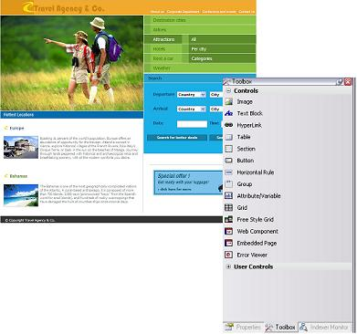

GeneXus provides a set of standard controls that allow not only the creation of the user interface but also of the application itself. These controls, which are applicable to Web Panels and Transactions, are located in each object's Toolbox.
The following figure shows a web form and the Toolbox:

To insert a control in the web form, just drag it from the Toolbox to the web form.
- Controls
- Attribute/Variable. Inserts both attributes and variables in the form from a selection dialog box.
- Button. Allows inserting a button in the form. The button may be associated with a previously defined event or you may wish to define a new event for the button.
- Embedded Page. Allows the inclusion of external information to display the contents of any URL in Web objects generated with GeneXus.
- Error Viewer. Where messages are displayed.
- Horizontal Rule. Inserts a cosmetic line in the web form.
- HyperLink. Links in the object’s Web form. Before adding a link you will be able to configure it.
- Image. Pictures in the object’s Web Form to show different images from the Knowledge Base Image repository.
- Text Block. Text blocks in the object’s Web form.
- Web Component. Web Panels that have a property indicating that they are components.
- Table. Tables in the form where other objects, such as images, text, etc., are added inside rows and columns.
- Containers
- Flex
- Free Style Grid. Inserts a grid to put attributes, variables, images, etc.
- Grid. Inserts a grid that shows multiple records from attributes and variables.
- Group. Inserts a container to deploy other objects separately and titled.
- Html
- Responsive Table
- Section. The area where other objects are added such as images, text, etc.
- Tab
- Table control
- Action Groups
- Miscellaneous
In addition to the above mentioned controls, the following standard controls are also available in the toolbox under their relevant category.
- Extended Controls
- GXGoogle Visualization Library
- Gauges
When GXflow is used,
|